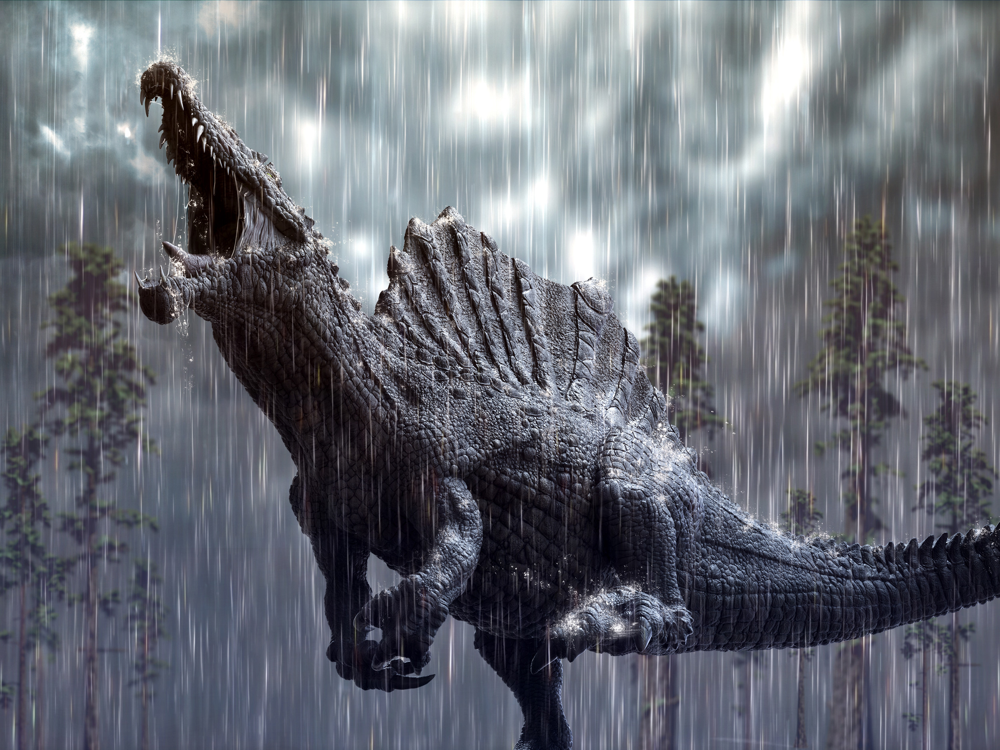
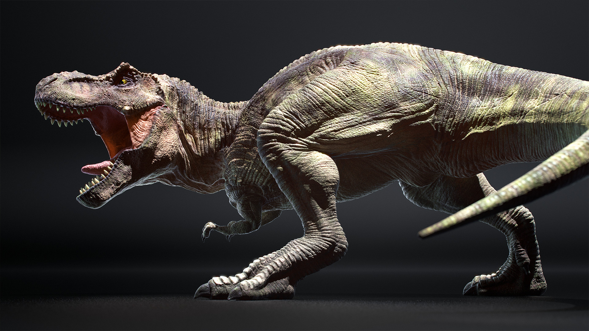

Spinosaurus (/ˌspɪnəˈsɔːrəs/; lit. 'spine lizard') is a genus of spinosaurid dinosaur that lived in what now is North Africa during the Cenomanian to upper Turonian stages of the Late Cretaceous period, about 99 to 93.5 million years ago.[2][3] The genus was known first from Egyptian remains discovered in 1912 and described by German palaeontologist Ernst Stromer in 1915. The original remains were destroyed in World War II, but additional material came to light in the early 21st century. It is unclear whether one or two species are represented in the fossils reported in the scientific literature. The best known species is S. aegyptiacus from Egypt, although a potential second species, S. maroccanus, has been recovered from Morocco. The contemporary spinosaurid genus Sigilmassasaurus has also been synonymized by some authors with S. aegyptiacus, though other researchers propose it to be a distinct taxon. Another possible junior synonym is Oxalaia from the Alcântara Formation in Brazil. 
Tyrannosaurus[nb 1] is a genus of large theropod dinosaur. The species Tyrannosaurus rex (rex meaning "king" in Latin), often called T. rex or colloquially T-Rex, is one of the best represented theropods. Tyrannosaurus lived throughout what is now western North America, on what was then an island continent known as Laramidia. Tyrannosaurus had a much wider range than other tyrannosaurids. Fossils are found in a variety of rock formations dating to the Maastrichtian age of the Upper Cretaceous period, 68 to 66 million years ago. It was the last known member of the tyrannosaurids and among the last non-avian dinosaurs to exist before the Cretaceous–Paleogene extinction event. 